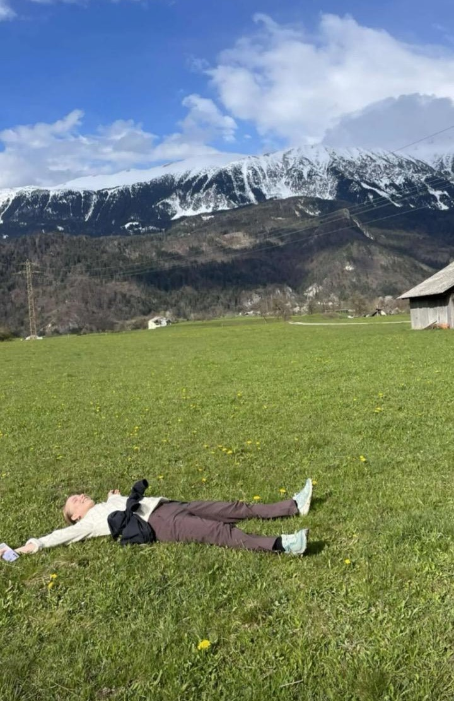
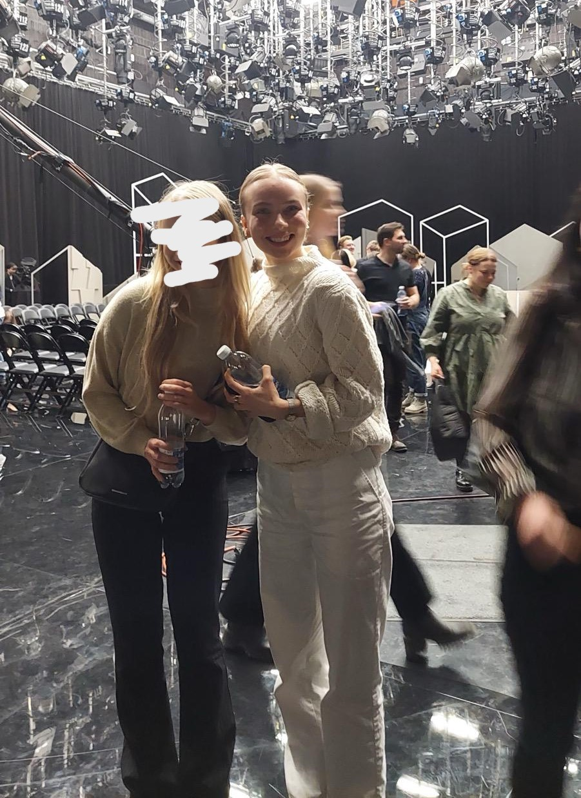
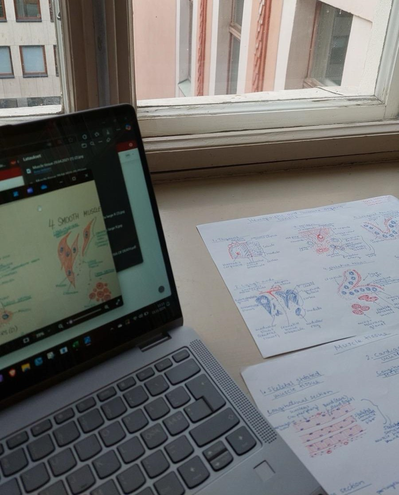
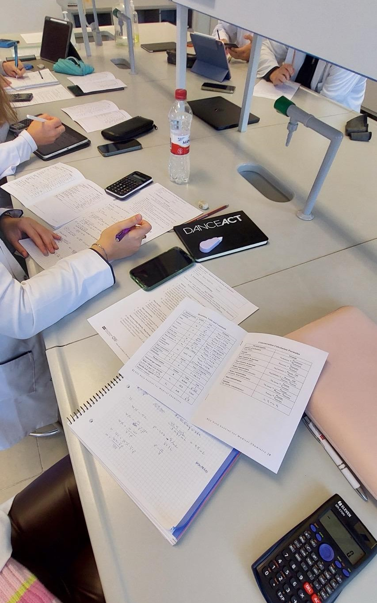

About me

I'm a third semester dentistry student and I couldn't be happier with the path that I have chosen.:
About me
I moved to Riga to study dentistry here, but after living 1 and half year in here I have slovly, but surely fallen in love with this place. I love exploring new areas around me. Nature has always been close to my heart there are so many beautiful places to see. Welcome to follow my journey!.
Dentistry studies


Cycling
I am still new in the cycling world, but I have to say that I am completely hooked on it. I am trying to become better everyday and maybe one day I will have enough of courage to participate in actual cycling competitions.


Hiking
The best sleeps of my nights are always under the starry night.


Sewing/knitting
Nuorten väkivaltarikokset näkyvät helsinkiläisten arjessa
"Liki puolet helsinkiläisistä pitää Helsingin keskustaa viikonloppuöisin vaarallisena."
Kirjoittanut: Veera Helkama
Ääripäiden poliitikot saavat somessa eniten näkyvyyttä
"Algoritmit suosivat ääripäiden poliitikkoja. Tunteita herättävät kovasanaiset ja kärjekkäät julkaisut saavat huomattavasti enemmän näkyvyyttä kuin maltillisemmat julkaisut."
Kirjoittanut: Veera Helkama
Traveling
Hinnasto
Hinnasto